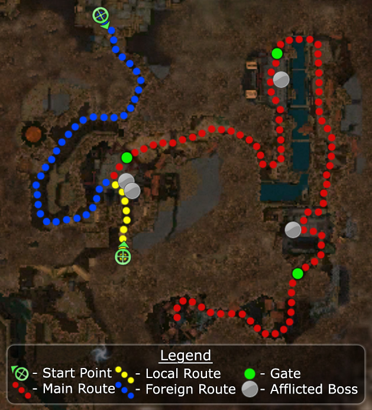

Elite: Enraged Smash
M3
Vizunah Square
◉ Mission Map

Click to enlarge · Local cache · Wiki
Summary (click to expand)
In Vizunah Square , a party of characters from outside Cantha accompanied by Mhenlo meet with a party of Canthan native characters with Master Togo . Together the parties fight through droves of afflicted to find the source of the plague in Kaineng City.
Region: Kaineng City · Mission: 3 of 13 · Type: Cooperative
✓ Objectives
Locate the source of the plague in Kaineng City.
Find Togo in Vizunah Square. (If your party is from Vizunah Square (Foreign Quarter).)
Hold out until Mhenlo 's party arrives. (If your party is from Vizunah Square (Local Quarter).)
Travel with Mhenlo and Togo in search of the plague's source.
Defeat Shiro's Construct.
- Mhenlo must survive.
- Togo must survive.
→ Walkthrough
The local and foreign parties start at separate locations. The local party, together with Master Togo, will enter an area where they will be faced with spawning Afflicted. The foreign party, with Mhenlo, will need to fight several groups of Am Fah enemies first to make their way to the meet up point. Since Master Togo has to be kept alive, a common reason to fail the mission is for the local party to become overwhelmed and Togo dies, before the foreign party arrives. To prevent this, the local party should place more emphasis on healing compared to the foreign one. Once the two groups meet, healers from both parties are able to heal both NPCs.
After the first large battle, the mission follows a linear path, including two other large fights at Afflicted spawning points. During these fights, multiple waves of Afflicted spawn (and respawn) from three separate points. The Afflicted Soul Explosion can overwhelm parties in these situations. Eliminating the afflicted bosses will stop the respawning of Afflicted and cause the opening of the nearby gate, allowing continuation of the mission. Spread apart and try to intercept the spawns with three "mini-parties" instead of fighting them all in one big melee.
Note that while you can heal members of the other group, you cannot resurrect them. Each party has to provide for their own means of resurrection.
This mission has numerous bugs, some forcing a restart. See the notes for details.
★ Bonus
See walkthrough and objectives for bonus details (if any).
◆ Hard Mode
No dedicated Hard Mode section on the wiki — expect tougher foes and adjusted mechanics. See walkthrough notes.
☠ Bosses & Elites
Elite: Broad Head Arrow
Elite: Ray of Judgment
Elite: Order of Apostasy
Elite: Stolen Speed
Elite: Mind Burn
Elite: Shadow Form
Elite: Weapon of Quickening
✦ Tips & Notes
Skill recommendations
- Bring skills that can affect multiple allies, since there will be 16 characters (from the two parties) plus Togo and Mhenlo.
- Area of effect skills are very helpful because the fighting is tight and packed. Wards, wells, and point blank area of effect skills are very effective in this mission. Area of effect skills that inflict damage can cause many Afflicted Soul Explosions to trigger at the same time.
- There are enough exploitable corpses to support several minion masters; however, remember that the sacrifice from Blood of the Master is determined by the total number of allied minions.
- "I Will Avenge You!" will benefit from the deaths of Canthan Guards and Peasants; it can provide a near-continuous buff during the mission.
- Speed boosts (e.g. "Fall Back!") are helpful for two reasons: the mission is timed and often party members will find themselves running from one fight to another.
- Afflicted Ritualists can slow progress, especially in hard mode since they are potent healers who can resurrect their allies. Bring shutdowns or other anti-caster skills.
- If entering from Local Quarter, consider not bringing Signet of Spirits, since Chiyo of the Foreign Quarter party (if no player-Foreign Quarter party joins) uses it.
- Enchantment-based builds are vulnerable to enchantment removal by Afflicted Necromancers and Mesmers. Afflicted that deal physical damage can also remove enchantments when enchanted with Afflicted Necromancer's Order of Apostasy.
Notes
- When a boss is killed, the subsequent Morale Boost is only awarded to the party that inflicted the killing blow.
- You will have to fight some of the Canthan civilians, who have been infected by the plague. On dying, they will spawn an Afflicted creature; such spawned Afflicted, while technically hostile to the party, will not attack you and will generally try to flee. However, you'll usually end up killing them anyway as any NPCs in your party will attack them.
- The death that occurs during the end cinematic does not halt progress of the Survivor title track.
- Completion of this mission will fill in page #1 of the Shiro's Return storybook.
- On completion of this mission, your party will appear in Dragon's Throat.
- A large chunk of the inaccessible southeast corner can be explored for Canthan Cartographer by viewing the mission cinematic. (Talk to Guardsman Chow in the Foreign Quarter to replay it.)
- It is possible for Togo to die before you reach him the first time, thus failing the mission.
- The Foreign Quarter party need only defeat the first four Am Fah at the start of the mission, and then simply wait and leave Mhenlo to run his scripted path to reach Master Togo alone. All of the other foes on the route are popups and are not triggered by Mhenlo. When he walks to the bottom, the cinematic teleports the Foreign Quarter party down into the square.
- Some Afflicted may spawn without weapons.
- It is possible for a henchman-only party to get stuck behind a chest, forcing you to either restart the mission or continue alone. If the henchman party is starting from the Foreign Quarter, this can happen before they reach the first meeting point. It is possible for Togo or Mhenlo to get stuck in the same way.
- It is possible for Togo to just get stuck for no reason, which causes the last fight to fail to initialize, making the final battle of the mission impossible to complete.
- If you bring minions, Mhenlo can get distracted in healing them, causing him not to reach his waypoints. A sign that this has happened is Togo standing still some distance behind the party. If this happens, try moving back towards Togo; when Mhenlo gets close enough, the missed waypoint will trigger and Togo will start moving again.